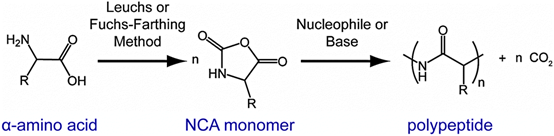
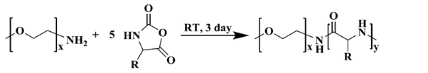
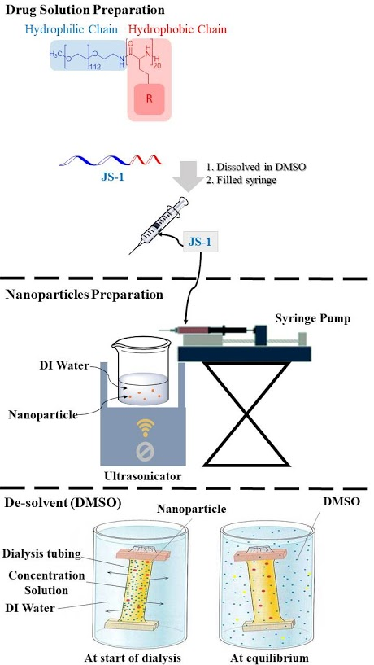

LabBook
Aim:
As described above, we wanted to synthesize different types of polypeptide nanoparticles based on different amino acids. The steps are as followed:
 Figure. F-1. The procedure of synthesis.
Step 1: Synthesis of a-amino acid NCAs (N-carboxyanhydrides) monomer
The process of synthesizing each monomer is slightly different from each other due to different chemical structures. Here we take the synthesis of modified glutamate* NCA as an example.
- In a glove box, modified glutamate* NCA and triphosgene were weighted out and dissolved in anhydrous THF.
- The resulting mixture was taken out the glove box and stirred at 55 ℃ for 2 hours.
- Then the reaction mixture was added to anhydrous hexane, causing the precipitation of NCA, and recrystallized at -20℃.
- The NCA powder was obtained by removing hexane via filtration, followed by drying in vacuo. *: patent confidentiality
Step 2: Synthesis of PEG-block-polypeptide block copolymer
 Figure. F-2. Ring-opening polymerization.
We will synthesize PEG-block-polypeptide block copolymer via ring-opening polymerization (ROP) using PEG (Polyethylene glycol)-NH2 as the initiator as shown above(Figure. F-2).
- In a glove box, PEG-NH2 and NCA were weighted out and placed in two different flasks.Anhydrous DMF was added to the two flasks.
- The PEG-NH2 solution was then transferred to the NCA solution and the resulting mixture was taken out the glove box and stirred at room temperature under argon atmosphere.
- After stirring for 72 h, the reaction mixture was dialyzed against methanol for 2 days, followed by dialyzing against deionized (DI) water for 1 day.
- The solution was freeze-dried to yield the product as a white powder.
 Figure. F-3. Drug solution preparation.
Step 3: Synthesis and Analysis of Polymeric Nanoparticles
We used different processes including film rehydration, nanoprecipitation, and solvent displacement methods to prepare the polymeric nanoparticles. The block copolymer would self-assemble to form nanoparticles in aqueous solutions due to the hydrophobic interactions exerted by the polypeptide segments.